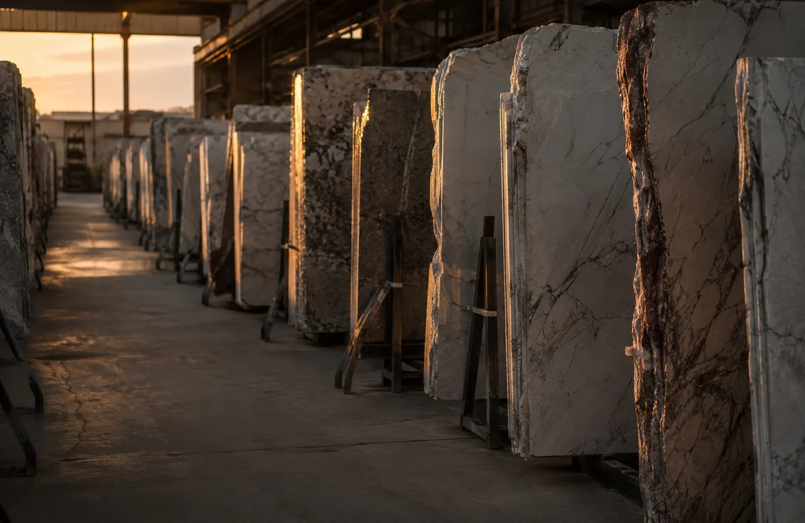

Metamorphic
Marble
Marble begins as limestone, much of it laid down on ancient seabeds from shells and calcium-rich sediment. When heat and pressure reach it deep underground, the original stone recrystallises and becomes denser, stronger and softly luminous.
The veins are part of that geological story: mineral traces carried through the stone as it folded and changed. Every slab records a different moment of pressure, movement and time.
Read the marble guide